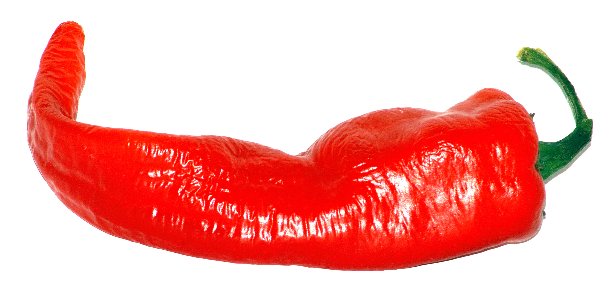

Röviden rólam
Több ezer éves múltra tekintek vissza, legtöbb helyen Közép- és Kelet- Amerikát említenek mint származási helyet. Peruban végzett ásatásokon Kr. e. 2500 körüli időszakból előkerültek termésem maradványai, paprika formájú edények, paprika mintájú textíliák és paprika feldolgozáshoz szükséges eszközök. Kutatók azt állapították meg, hogy a megtalált paprika maradványok már nem vadon élő fajták voltak, hanem az indiánok által már korábban házasított fajták. Ezek az őseim még méreg erősek voltak, az édesebb fajtákat csak jóval később sikerült nemesíteni.

Alvarez Diego Chanca Kolumbusz Kristóf orvosa hozott be Európába, egészen pontosan Spanyolországba az első magvakat. Spanyol gasztronómiában hamar elterjedt a chili való használatom.
Magyarországon a XVI. században jelentem meg főúri, és főpapi kertekben dísznövényként. Törökök a Duna, és Tisza menti járványok (tífusz, vérhas) ellen használtak, így terjedtem el az Alföldön mint gyógyszer.
